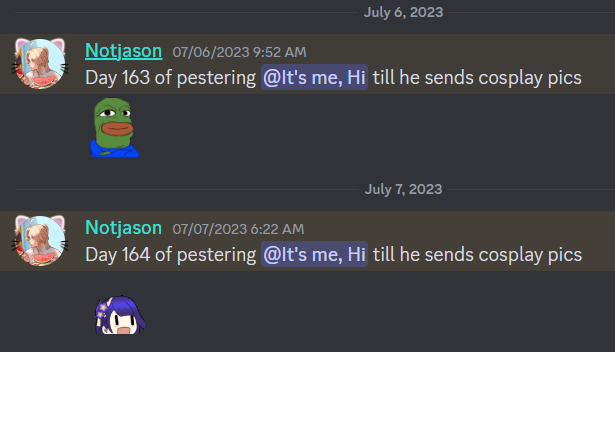

Jason is a Criminology Student at X university,
and he doesn't like boba tea, his has house have
a lot of gardening and flowers, he even have a little
old timey like victorian style.
He likes girls
and want a girlfriend but
he don't even have female friends because
he is shy and awkward around them he thought they he is
making the girls uncomfortable just him being around them....
or at least that's what he think.
In reality, girls think that he is very
tidy and well reserved, easy to get along
with especially when talking about
his hobbies which are animes.
There was a time
that he play Camelot, an anime collection discord
bot where he whaled hard, during the time he was playing
he likes bullying other player by dueling them(asking them
for arena battle). Sooner the dev of Camelot started
recruiting player to become a helper or mod, there he met
a player that he got close with, this player later on send a Cosplay
Picture with his friend in an Anime Convention there.... started everything.
since then, Jason ask that friend for a new cosplay picture everyday
this madness lasted for hundreds of days.
just like staying as a v*rgin at 30 years old to be a mage, Jason gain
an Achievement for his unwavering commitment, his huge determination to get that
cosplay picture. Because of this Achievements he gain an ability
perfect for his Assiduous Nature, Bro is down bad for a cosplay picture
that he gain an ability to call a waifu to help him in any situation. However, Jason
is too much of a simp for a waifu so he cannot hit any Female
or even a male if they crossdress as a waifu.

Use: 1
Mana Cost: 30% HP
Timeout: yes
Type: Farming/Versatile
Active: "Ask for Help"
- decrease your Current HP by 30% and gain shield by 40% of your Current HP for 3 turns,
during this time the enemy cannot deal true damage.
once the shield is gone your partner will come to help you
by using their selected character **active ability**
[e.g partner selected character is Shalltear,
then after losing the shield your partner selected
character will come to help you with Shalltear's active ability]
(passives will not work if you and your partner both use Jason EX, active will only work if your partner selected character is a waifu or trap)
New Command: Partner
- /partner user: @user1
- you can choose any user as your partner
and you both will gain benefits cd: 1 month
/remove-partner
- break up with your partner (after breaking up
the 1 month cd will start [basically you'll be single for a month])
note: Confirmation button to prevent accidentally removing your partner
Passive: Send Cosplay
- with his dedication to ask for a cosplay picture,
he gains +15% in /daily.
(+ 0.1% coins in /daily for each VOTING streak over 300, cap VOTING 365 streak)
Passive: Partner with Beneftis
- you will have 25% loot boost in dungeon while your
"partner" will have 15% exp boost in dungeon only
if you have Jason EX selected as your character
Passive: Help me Mommy
- once every battle you help your partner if she dies in dungeon
your partner can be revived with 20% HP in exchange of you losing
class exp by the same amount of class exp she gains
(once a day only)
cannot stack with revive items
ps: I can't think of any name
Passive: Unwavering Commitment
- for each daily streak capping at 300 he gain 5 shield at the start of the battle
Party Passive: Send Cosplay Pic
- to use this Passive, the member must send cosplay picture to Jason
- Joke aside - for each /daily streak party member have
they gain 3 shield at the start of the battle capping at 300 daily streak.
if they have over 300 Voting Streak, increase the Kernel drop by 5%.